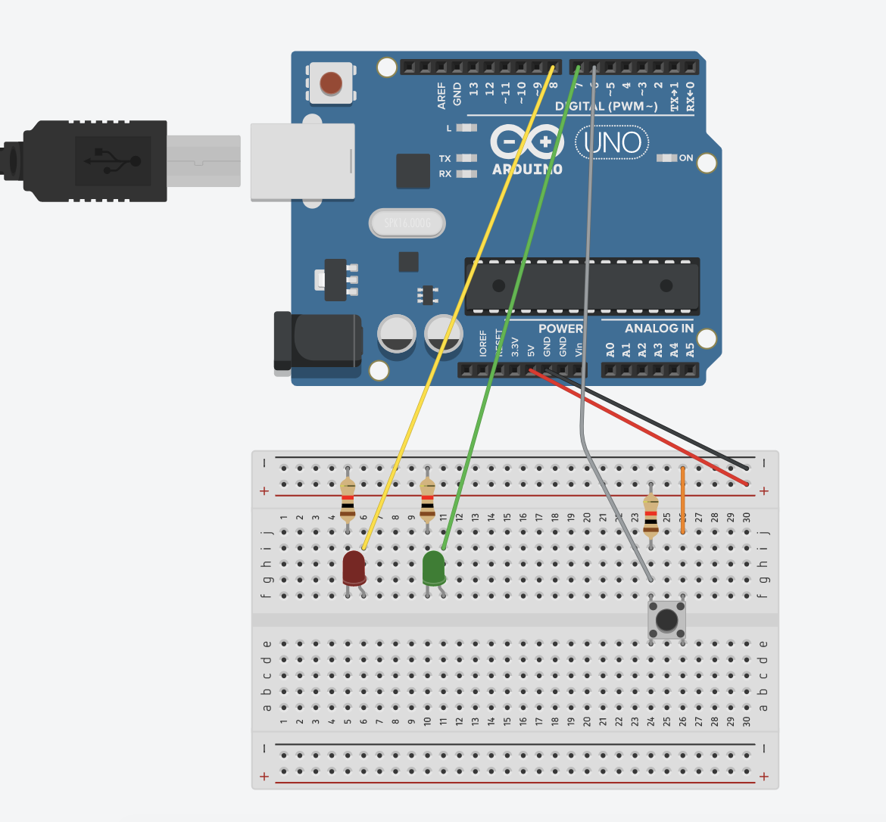
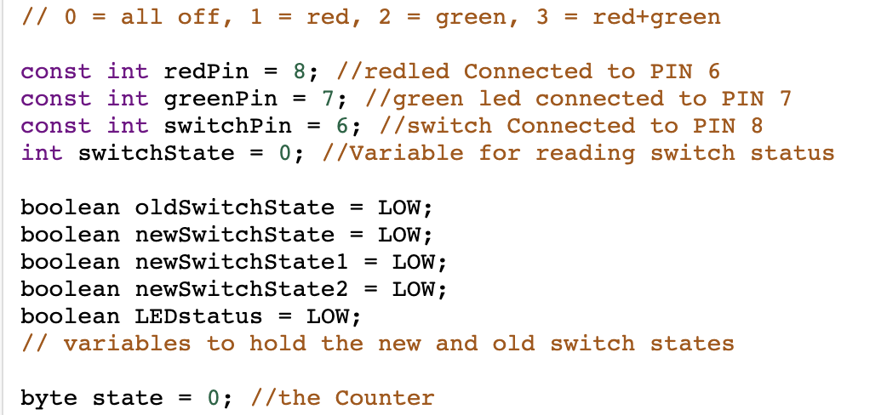
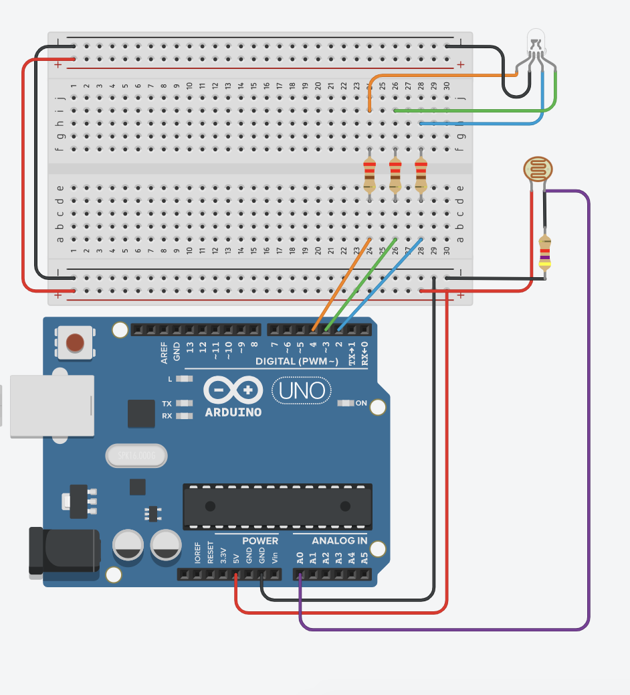
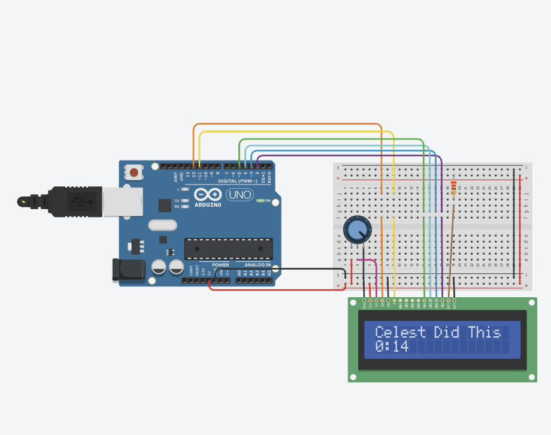
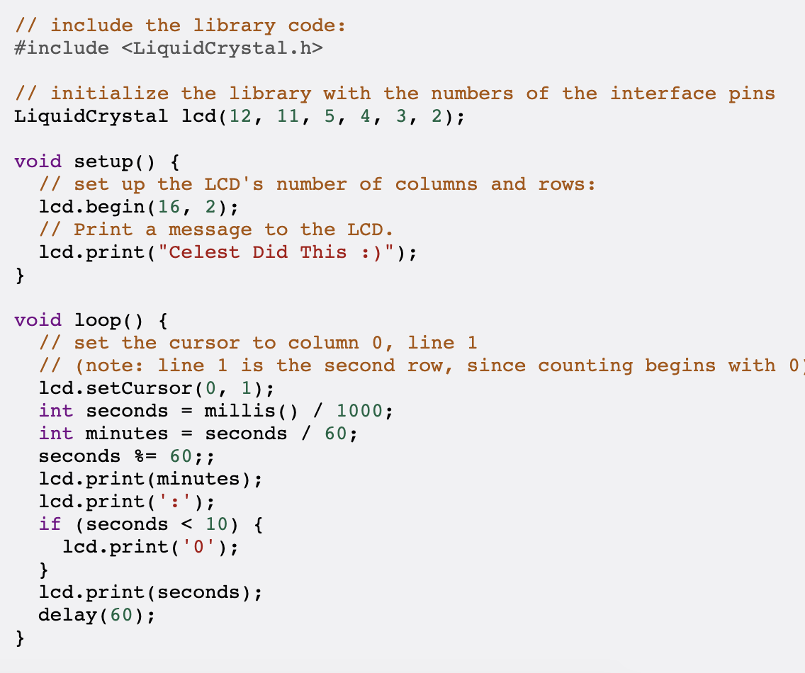

Week 12: Soldering
Thankfully, we are reaching the final end of our DFAB journey. Before we can do some circuits, we need to learn how to solder wires if we ever need to do so in the future.
Make sure to watch the following videos because soldering is a skill that requires time and effort to learn. https://youtu.be/Fp37DPZVdRI and https://youtu.be/oqV2xU1fee8 were the videos I watched.

A properly soldered wire should look like this. It is not a dry solder which means there is no lump and the soldering liquid is flat against the wire. Not only that, the solder is shiny and silvery, rather than dull and matte which usually happens in a dry solder. Make sure you're not using the soldering iron upside down as well!
You can test out if the soldered works or not using a circuit below. When the wire works, the oscillator would show the lines as seen in the image.

Simple LED Control
We will write a simple LED control with a current limiting resistor of 220 ohm. The main instructions are found here
Usually, we will try the circuit setup in TinkerCAD first to see if it works or not. This is how I connected the circuit.

Next, write the code out. I used a boolean switch state so it would not keep turning off whenever I press the switch. Most of the explanation is written in the picture of the code and luckily, it works when I put it in TinkerCAD.

The final circuit if you put it in real life should look like this:

We can create one with two LEDs that changes patterns when the button is pressed. Here is how I set up the circuit .
The key to getting the circuit to work is the use of switch states. I used boolean because we just needed to define whether it is true or false. Make sure to define it at the beginning so the program knows which refers to which.
Interfacing a LDR with an RGB LED
For the next assignment, we will interface a photoresistor to be a moodlamp. Right now, the circuit below only lights up in green when we change the light detected by the LDR. We want to it show a multitude of colours.

The first thing you will notice is that the const int for the different colour of LEDs don't actually correspond to what is connected on the Arduino board. This is why only the green LED works. Make sure to change the values and then run the code again. Our blink program allows us to see the colours flashing once.

Once you are done setting it up properly, you should see that the LED changes from red to magenta to yellow depending on the light. The 00&A is actually numerical values written in binary form. But what if we wanted a different combination of colour?
Then changing it is just as easy as rewriting the values for the if statement. Since I do not know binary, I decided to write it in numerical form and came up with this.

This changes the light from red to orange to yellow to white. If we wanted a different combination of colours, we can either change the order of the LED being lit, or change the numerical values to be more precise.

Interfacing an i2c LCD Panel
For our last assignment, we shall interface an i2c LCD panel to update a counter every second. Make sure to install the liquidcrystal I2C program and include it in the beginning of your code else it would not work.
I first set up the circuit in TinkerCAD. Thankfully, they have a preset i2c LCD diagram for you to use. However, if you were to do it in real life, all you need to wire is the Vcc, Ground, SCL and SDA.
For my code, I put my name in the setup so it does not have to keep printing it every time the program loops. I used the integer function to count in percentage. Every 60 seconds, the program loops and changes the number by adding 1 digit to it. I also added a code in the beginning that tells the program to print the numbers on the second column rather than the first, so you can see the name that I put in the setup. The site that helped me understand was https://yoursunny.com/t/2017/ESP8266-LCD-count-up-timer/.
Reference Sites
A resource that really helped me to understand how programming works was Human Resource Machine because it helped me visualise how the code would work. I also referenced the sites on the DFAB webpage so I understood how the different parts work. Other than that, Googling and checking multiple websites is good because the one on the DFAB webpage may not be the best answer, and you might find an easier one somewhere else.